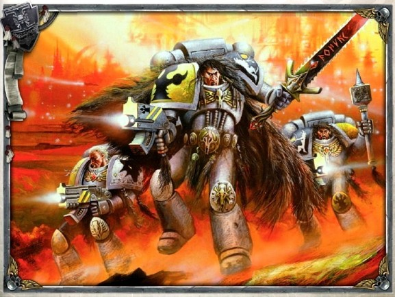
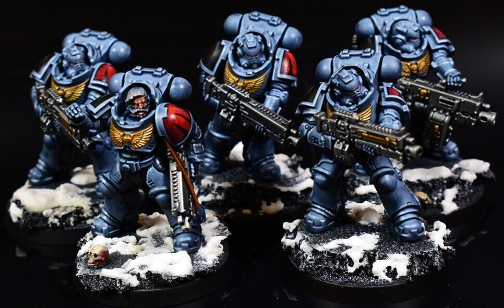
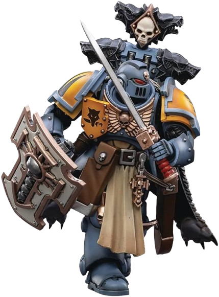
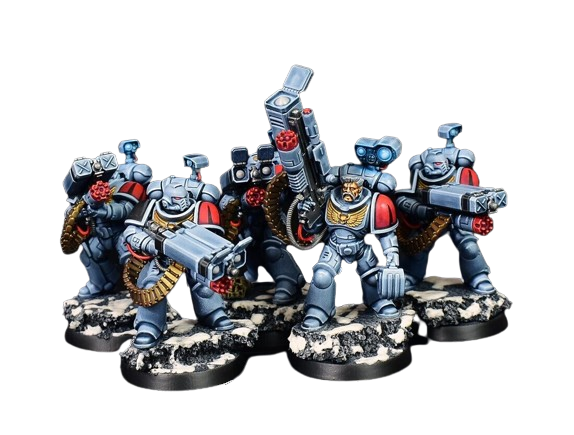
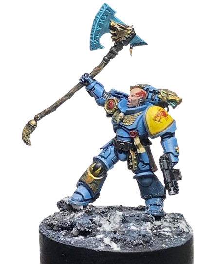
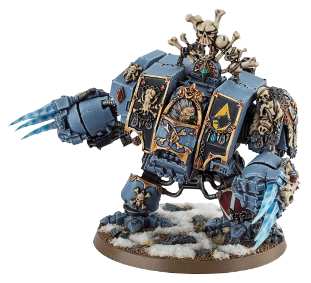

Chapter Organisation
The Space Wolves are known for their fiercely anti-authoritarian behaviour. They strongly resist the central command structure of the Imperium, organising themselves into "packs" instead of the normal squads deployed by the Adeptus Astartes and continue to refuse the dictates of the Codex Astartes, the standardised guide to Space Marine tactics and organisation created by the Ultramarines' Primarch Roboute Guilliman. The Space Wolves only accept some standard Imperial tactics that were considered useful for their own preferred style of warfare. As such, they have a reputation among the Imperial military for being as ill-disciplined as they are fearless. It is often said that the best way to get a Space Wolf to do something is to tell him not to do it.
Wolf Packs
Blood Claws
A Blood Claw is a newly inducted Astartes of the Space Wolves Chapter and the equivalent of a Codex Astartes-compliant Chapter's neophytes or Scout Marines. Still struggling to control the spirit of the Wulfen within, Blood Claws are notoriously savage and fiercely aggressive. These hot-headed young warriors cannot wait to prove themselves, charging in howling packs at the front lines of the enemy in their efforts to garner personal glory. They prefer to fight at close quarters and are armed with melee weapons such as chainswords and Bolt Pistols as a sidearm. The Blood Claws are the shock troops of the Space Wolves and spearhead the majority of assaults. If they survive to become mature and capable warriors, they will eventually be elevated to the Veteran ranks of the Grey Hunters.
Swift Claws
A subset of the Blood Claws, the Swift Claws are culled from the ranks of the Blood Claws when the Chapter needs a swift, hard-hitting assault force comprised of Bike Squads or Land Speeders. The young and ambitious Blood Claws are well suited to this role. In addition to forming a lightning assault force, Swift Claws will occasionally be tasked with a dangerous quest to track down and slay a particularly powerful enemy. Given the opportunity to sow the maximum amount of carnage and disruption possible, these young warriors apply themselves with particular relish in the performance of their duties. Some Blood Claws are so taken by this role -- not to mention the opportunities for raising havoc that come along with it -- that they demand the right to a permanent position as a Swift Claw. Unlike other Chapters that use their Bike Squads primarily for forward reconnaissance, the Space Wolves use their bikes in a demolitions and close assault role.
Skyclaws
The Skyclaws are a subset of Blood Claws. This specialist unit is composed of the most headstrong troublemakers from each Blood Claw pack and are often "rewarded" by reassignment to a Skyclaw Assault Pack and thus serve as the Chapter's equivalent of Assault Marines. Entrusted with a Jump Pack, this vital piece of wargear provides the young warrior with the opportunity to indulge in their desire to charge headlong into the thick of battle. It is said amongst the more experienced battle-brothers of the Chapter that if the youngsters wish to slake their reckless bloodthirst, let them, and if they die in the process then they will still learn a valuable lesson. Though considered a dubious honour by their more mature brethren, the Skyclaws are bound and determined to prove themselves in the eyes of their elders. Unafraid and uncaring, they soar fearlessly through the skies in great leaps, taking great joy in watching the enemy crumble beneath the reckless fury of their airborne assault. Truly the most rebellious and free-spirited of all the Space Wolves, the Skyclaws are constantly trying to prove themselves. They are known to compete against packs of Blood Claws through friendly contests of athletic prowess, drinking and eating. Impetuous and foolhardy, the Skyclaws are known for their fondness for practical jokes. Although transgressions that cost the lives of their fellows are punished severely, even their Wolf Lords admit that they were young once, and so they often overlook these offences. It is rare for a Skyclaw to be exiled for their reckless deeds. But those that push their luck too far and commit an offence that is anathema to their Chapter are assigned a punishment that fits the crime. One who has caused the death of a senior member of the Space Wolves may be struck down, only to awaken to a new life as a Med-Servitor.
Grey Hunters
If Blood Claws survive long enough to mature into seasoned Astartes, they are promoted to the ranks of the Grey Hunters. These experienced Astartes are the equivalent of a Codex Astartes-compliant Chapter's Tactical Marines. The Grey Hunter packs form the greater mass of the Space Wolves' warriors. They are strong and resolute fighters, tempered by battle but as hungry for honour as any proud warrior of Fenris. They are experienced warriors, dour and sombre, proud of their skills, and rightly honoured by their younger brethren.
Long Fangs
Long Fangs form a cadre of Veteran warriors within the Chapter. Hoary with age, proud and wise, they are quite literally endowed with long fangs, for as a Space Wolf ages his canines lengthen and his hair grows course and grey. After many Terran centuries of long wars, their esteem stands as a mountain, commanding awe and respect from those of lesser years. There are relatively few Long Fangs within the Chapter, for many warriors die in battle so only a minority survive to reach a venerable age. Their saga is almost complete. These veteran warriors are disciplined and steady even in the heat of battle, and hence entrusted with the Great Company's heavy weapons. They are the equivalent of a Codex Astartes-compliant Chapter's Devastator Marines. Having fought and survived so many wars the Long Fangs are rarely unsettled even by the most serious set-back. There are many accounts within the Chapter's history that recount the deeds of the stalwart Long Fangs, who have held the field against overwhelming odds, even after all others have fled or been slain.
Wolf Guard
Some Space Wolves, having achieved feats of exceptional valour and martial prowess, may become members of the Chapter's Wolf Guard. These mighty Astartes can lead smaller forces of Space Wolves drawn from other packs, serve as the Space Wolves' version of an honour guard for the most experienced warrior in a deployed Space Wolves force or serve as the pack leader for one of a Great Company's squads, imparting their knowledge and experience to their younger charges and serving as the equivalent of standard Space Marine sergeants. In addition to access to the best suits of power armour and the most advanced wargear available to the Chapter, the Wolf Guard have earned the right to wear Terminator Armour. Unlike other Chapters, entrance into the elite ranks of the Wolf Guard is not the result of seniority or Veteran status but is an honour earned directly through merit, through the display of extraordinary acts of courage and heroism under fire, regardless of the chosen Astartes' former status in the Chapter. Eventually, it is possible for a Wolf Guard to rise to the position of Wolf Lord, the mighty officers equivalent in rank to standard Space Marine captains who command one of the 12 Great Companies that comprise the entirety of the Chapter. It is to the elite of the Wolf Guard that each Great Company first looks when a new Wolf Lord must be raised.
Thunderwolf Cavalry
Thunderwolf Cavalry units are a sub-group of the Wolf Guard. According to official Imperial records, the Thunderwolf Cavalry doesn't exist and the Space Wolves keep them as a closely guarded secret. Thunderwolves are giant Fenrisian Wolves that stand about the height of a Terran rhinoceros and are used as mounts by the most elite members of the Wolf Guard. Thunderwolves are used in the near-mythical Thunderwolf Cavalry, and are often augmented with adamantium jaws, Imperial bionics, and back-jointed metal limbs that end in razor-sharp blades. The havoc that these creatures are capable of wreaking is said to be startling to even a hardened Veteran Space Wolf. The taming of a Thunderwolf is often used as a ritual trial for a Space Wolves Astartes who wishes to rise into the ranks of the Wolf Guards.
Wolf Scouts
For some Space Wolves Astartes, the close-knit and boisterous brotherhood of the pack (squad) is not well-suited to their personality, as they yearn for the open spaces and isolation of the Fenrisian tundra. These Space Marines are selected to become part of a Great Company's Wolf Scout force, providing reconnaissance in force, skirmishing capabilities and disrupting enemy movements and logistics. These Space Marines are often already Veterans, as opposed to the raw neophytes commonly used in other Chapters' Scout Squads.
Lone Wolves
Over time, as Space Wolves packs take casualties and gain experience, they pass through the ranks, and eventually the last few survivors may earn the right to enter the vaunted ranks of the Wolf Guard. However, sometimes a pack will suffer particularly harsh casualties, leaving a lone survivor who has not yet earned a place in the Wolf Guard. These last standing "Lone Wolves" will take on an air of vengeance and doom, determined to regain the honour of their pack in combat or die trying. Those who succeed in their quests to seek out and slay dangerous or potent enemies and survive are accepted into the Wolf Guard, while the rest have at least earned an honourable death in combat like their lost packmates.
Wolf Blades
The Wolfblade is an ancient honour guard of Space Wolves that are sent to Terra to protect the millennia-old Navigator House Belisarius, long-time allies of the Chapter. They train the ruling celestarch of House Belisarius' house troops and lead them into battle. The Wolfblade act as the celestarch's strong right arm when there is need. They slay his enemies in open battle and by stealth if need be. This pact's origins are lost to legend, but the most commonly accepted version of the story dates it from the time of the Great Crusade and the friendship between Primarch Leman Russ and Alexander Belisarius. Belisarius was a Navigator of genius, who aided Russ on many of his adventures. On the day of the Feast of the Founding they are said to have sworn a pact of eternal friendship. As a sign of this friendship, the Belisarius family agreed to provide Navigators for the Chapter in perpetuam, in return for the Space Wolves' martial aid. An entire pack of Space Wolves would accompany the celestarch of House Belisarius as his bodyguard. Given the fractious nature of the Navigator Houses of the Navis Nobilite, and a commercial rivalry which, at that time, could result in conflicts as large as wars, this was an alliance of vast importance for the Navigators. The Space Wolves still enjoy a close bond to House Belisarius, a political alliance between a Navigator House and a Chapter of the Adeptus Astartes that is shared only by the Blood Ravens, White Scars, and Blood Angels Chapters.
Primaris Packs
Intercessors
Like their Grey Hunters brethren who they match in experience, Intercessors of the Ultima Founding are extremely reliable and resilient warriors who form the core of many a hunt. The inherent aggression of these Primaris Space Marines is balanced by an icy calmness, an ability to assess the battlefield situation quickly and respond rapidly to the movements of the enemy. Rather than charging headlong into close-quarters fighting, Intercessors prefer to take down their prey at range, but will not shy away from visceral hand-to-hand combat if it best serves their Great Company. All Intercessors carry a Bolt Pistol sidearm as well as belts of Frag and Krak Grenades to blast apart clustered and heavily armoured foes, respectively. Packs can also be equipped with auxiliary Grenade Launchers to fire their explosives at distant enemies. Most Great Companies have a large number of Intercessors in their core line, and when deployed for war they often fight alongside packs of Grey Hunters. There is much rivalry between these warriors, as each competes for their pack to kill more of the enemy. This can be used to great advantage by their Battle Leaders, who vociferously praise the exploits of one pack to further spur on the other. Similarly, Intercessors have been known to partake in competitions with Grey Hunters off the battlefield, ranging from eating and drinking contests at feasts to displays of strength and agility in the Fenrisian wilds. Despite the rivalry between their packs and the packs of other Space Wolves, Intercessors are disciplined and loyal on the battlefield, and will follow the orders of their Wolf Lords and Battle Leaders until their dying breaths. It is not uncommon for a pack of Intercessors to form an immovable firing line to halt an advancing enemy, giving time for Wolf Priests to tend to injured battle-brothers or retrieve the gene-seed of the fallen, even if it costs the lives of the Intercessors themselves.
Heavy Intercessors
A Heavy Intercessor is a Primaris Space Marine who serves on the battleline and are a potent defensive force. Clad in thick Mark X Gravis Power Armour, Heavy Intercessors are used to secure ground already won and are immovable in its defence. Always ready for any sign of enemy counterattack, they stand firm, laying down volleys of heavy fire with their Heavy Bolt Rifles that keep all but the most determined or foolhardy enemies at bay.
Assault Intercessors
Assault Intercessors are Primaris Marines who are among the most widespread close support units in the Space Wolves' arsenal. Firing their Heavy Bolt Pistols as they close upon the foe, they charge into the fray in the ferocious manner common to the Space Wolves, where they make short work of their enemies with brutal swings of their chainswords.
Veteran Intercessors
A Veteran Intercessor is a Space Wolf Primaris Marine Intercessor who has earned the coveted Veteran status of a Long Fang. Since the Ultima Founding, Primaris Marines in the Space Wolves have wrought illustrious records as their tallies of victories have grown longer. Whether they were Firstborn Astartes who have crossed the Rubicon Primaris, were originally forged on Mars by Belisarius Cawl during the Ultima Founding or recruited directly by their Chapter from among new initiates, they now fight as part of the Space Wolves' most experienced cadre of warriors, many of who will eventually earn promotion to the Wolf Guard if they survive long enough. Veteran Intercessors can also take on the Assault Intercessor role when they engage in a close support rather than battleline capacity.
Inceptors
Inceptors are the most impetuous of the Space Wolves' Primaris battle-brothers. Inceptors have quickly proven themselves to be excellent pack hunters. Like all Space Wolves, they possess highly acute senses -- even for Space Marines -- that allow them to track their prey across smoke-filled battlefields, sight their targets through clouds of choking toxins and pick up the scent of fresh blood from many kilometres away. Using these innate tracking skills, along with their heavy Jump Pack-enhanced speed provided by their Mark X Gravis Power Armour, Inceptors can head off enemy flanking manoeuvres or run down those foes who think themselves safe on the rear lines. Packs of Inceptors are experts at finding the most direct route to their enemy, bounding across ravines and rough terrain, landing on rocky outcrops and launching from the peaks of crumbling towers. When the hunt calls for it, Inceptors can also deploy from low-orbiting attack craft, where they leap from assault bays and plummet towards the battlefield. The carnage that Inceptors are able to unleash upon their prey is the stuff of sagas. Armed with an Assault Bolter in each hand or a pair of Plasma Exterminators, they can quickly tear through ranks of even heavily armoured infantry. Those foes unfortunate enough to face an Inceptor without the protection of armour are summarily shredded, reduced to gobbets of meat by the rapid streams of high-impact fire. Many Inceptors make the pilgrimage to Fenris - more so perhaps than any other of the Primaris battle-brothers - to undertake the Test of Morkai and to prove themselves worthy of their Fenrisian brethren. Upon completing this trial they drink heartily with the warriors of their Great Company and listen intently to the sagas that are recited during feasting. As the great stories are told, the Inceptors look forward to their own glorious death in service of the Imperium, and their immortalization within the annals of their Chapter. It is the sole purpose for which they were made Sky Warriors, and they race towards this destiny with fearless fury.
Aggressors
By far the most gregarious and jovial of the Primaris battle-brothers, Aggressors wade through the battlefield in search of the thickest fighting, their war cries and gruff laughter ringing loud through the clangour. They find endless satisfaction in dispatching the enemies of the Imperium, with the largest hordes and most terrifying monstrosities giving them the greatest joy. Yet they are not impetuous or hot-headed like the warriors who fight in close support packs, and their crushing advances are not made merely for the purpose of personal glory. The hammer blow of an Aggressor charge is carefully aimed to smash enemy formations, thus creating openings for other Space Wolves packs to pick off the fractured remnants. Only when their battle-brothers are sharing in the violence do Aggressors allow themselves to truly revel in the fighting by unleashing endless storms of fire upon the foe. Some Aggressors eschew the use of 'long-ranged' guns, such as Boltstorm Gauntlets, and instead march to battle armed with Flamestorm Gauntlets. Equipped with the same power-field generators, these variant gauntlets are equally deadly at extreme close quarters, but are mounted with flamers in place of bolt weapons. The wide blanket of burning promethium laid down by flamestorm gauntlets makes them indiscriminately devastating against enemies who dare to approach the Aggressors.
Hellblasters
Hellblasters are masters of plasma warfare. Like the Primaris Space Marines themselves, the armaments borne by Hellblasters are products of millennia-old design, crafted by the Archmagos Dominus of Mars, Belisarius Cawl. The most common of these weapons is the Plasma Incinerator, a variant of the Plasma Guns used by other Sky Warriors with an even greater range and ability to melt through armour. The Heavy Plasma Incinerator is more devastating still, requiring a back-mounted ancillary power core to unleash its blasts. The Assault Plasma Incinerator sacrifices a modicum of this destructive potential to accommodate an array of targeting augurs, and can be fired with relative accuracy even when the Hellblaster wielding it is charging at full pace. Hellblasters have a strong bond with the weapons they carry, believing that their own saga and that of their weapon's Machine Spirit are inextricably intertwined. When facing the most monstrous of foes, the Hellblaster may call upon this Machine Spirit, rousing its bellicosity to help fell the horrendous beast. If the furious energy the weapon releases should also kill the Hellblaster himself, then it is indeed a heroic last verse in their shared saga.
Incursors
An Incursor Pack is a close support Primaris Marine unit that fulfils an aggressive, close-quarters gun-fighting role within Space Wolf forces. Their missions typically see them storming defended positions, sweeping the flanks of spearhead advances or rapidly knocking out strategic enemy assets such as power generatorums and communication centres. Key to this role are the paired wargear technologies of their Occulus Bolt Carbines and the Divinator-class Auspexes that feed directly into their highly advanced transpectral combat visors.
Outriders
An Outrider is a Primaris Space Marine who rides to battle on a Raider Pattern Combat Bike. Outrider Packs advance ahead of the main Space Wolf lines, guard the flanks of larger formations and hunt down enemy infiltrators to the Adeptus Astartes' battlelines. When battle is joined, they conduct lightning fast hit-and-run attacks on defended positions and run down those who would try to escape the vengeance of the Chapter. The Raider Combat Bike, designed like most of the vehicles and wargear used by the Primaris Marines by Archmagos Dominus Belisarius Cawl, shares a lot of similarities with the standard Space Marine Assault Bike, including a twin-linked bolter weapon load-out and double exhausts. However, the engine block is even more heavily armoured, and the front suspension has undergone quite an evolution. While speed, weapons and armour are certainly important for a combat bike, they are nothing when compared with performance. The Raider Pattern Combat Bike is also excellent on the battlefield as long as its rider can dominate its bellicose Machine Spirit. With battle-brother and bike in harmony, victory is all but assured. Among the Dark Angels, Outriders usually serve with the Ravenwing.
Infiltrators
An Infiltrator is a type of Vanguard Space Marine who is usually part of an Infiltrator Pack. Vanguard Infiltrators are Primaris Space Marines who are responsible for disrupting enemy communications and sabotaging targets of opportunity. Clad in Mark X Phobos Power Armour, the first the enemy sees of Infiltrators is a cascade of choking smog as they hurl a barrage of Smoke Grenades, masking their advance. As the foe peers into the swirling cloud, these Space Wolves bring their targets down with disciplined bursts of fire, the augur-scopes of their marksman Bolt Carbines lighting each victim up for the kill. Aside from their weaponry, the most important tool at the Infiltrators' disposal is the Omni-Scrambler. This portable, back-mounted device intercepts wave signals across a broad spectrum, scrambling frequencies and diverting holo-broadcasts to ensure that enemy communiques never reach their intended recipients. Infiltrators are drilled in self-sufficiency and survival techniques, and some packs have their own medicae specialists called Helix Adepts to perform the sacred duty of recovering the gene-seed of fallen brothers.
Reivers
Where Wolf Scouts are stealthy hunters, Reivers are terror troops who instill in their enemies a sense of inescapable doom. Like the Firstborn Wolf Scouts they often fight alongside, Reivers are adept at flanking actions, setting up ambushes and targeting seemingly safe rearguard troops. As Primaris Marines, the full capabilities of Reivers are still being discovered by the Wolf Lords. On occasion, packs of Reivers are placed with the main body of a great pack, their arms and armaments making them more than capable in a straightforward firefight; but they have also shown exceptional flair for less conventional methods of deployment. Their sleek and lightweight Mark X Phobos Power Armour can be fitted with grav-chutes that allow the Reivers to be dropped into battle from low orbit. The grav-chutes' paired fins are used to guide the Reivers' descent, allowing them to glide along mountain ridges and around hive spires without leaving the contrail of a Jump Pack or Drop Pod, which would alert the enemy to their presence. The innate savagery of Reivers makes them a natural fit in the Great Companies of the Space Wolves. However, they tend to avoid the feasting halls where possible, and rarely engage in conversation with other battle-brothers. Even their Primaris brethren are kept at a distance. The only warriors outside of their own tight-knit packs with whom they openly converse are the Wolf Scouts, and even then their communications take place whilst out on shared patrols. Though Reivers and Wolf Scouts have been seen talking -- and on occasion even laughing -- in the distance, their stalkers' camaraderie remains dormant when in the presence of others not of their ilk. What Reivers lack in ebullience they make up for in battlefield effectiveness. Their reputation for swiftly and violently dispatching any enemy they are loosed upon has quickly spread through the ranks of the Space Wolves, and while they make poor drinking partners, their Battle Leaders know that Reivers can be counted upon to fulfil the duties of the Chapter. The saga of the Reivers is still in its opening verses, yet already it is replete with tales of their glorious victories.
Eliminators
An Eliminator Pack is composed of dedicated Space Wolves marksmen. These fire support Primaris Vanguard Marines haunt the shadows of the battlefield, seeking out high-value targets and bringing them down with pinpoint volleys of bolt rounds.
Suppressors
Suppressors are a type of fire support Vanguard Space Marine and usually members of a Suppressor Pack. Suppressors are Primaris Marines who specialise in rapid responses to heavily armoured enemy threats, entering battle either by dropping directly into the action via the Grav-Chutes or in long leaps using the Jump Packs integrated into their Mark X Omnis Power Armour. As soon as a target is sighted, the Suppressors engage their shock-absorbing servo plates and let fly with their portable Accelerator Autocannons. The brutal ferocity of the foot-long, armour-piercing shells they unleash will blast apart anyone caught in their path and force even the most stoic enemies to seek shelter from the murderous firestorm.
Eradicators
An Eradicator is a Primaris Marine dedicated to a close-range fire support role, particularly against enemy armour and fortified positions. Before the molten ire of an Eradicator Pack's thermal ray Melta Weapons, heavy armour and static defensive positions stand little chance. Eradicators wear the heavier Mark X Gravis Power Armour pattern, allowing them to stride unharmed through waves of incoming fire before bringing their own destructive weaponry to bear at close range.
Desolation Packs
A Desolation Pack is a squad of Primaris Marines who have been outfitted with multiple different types of missile launchers to provide long-ranged fire support to their battleline and close support brethren. These power armour-clad fire support specialists are an addition to the ranks of the Primaris Marines, laying down volleys of heavy firepower from across the battlefield. While Eradicators are forced to hustle their Melta Rifles into spitting distance, and Hellblasters must lug their Plasma Incinerators close enough for rapid fire, Desolation Marines can simply sit back and unleash a hellstorm of explosions. Traditional missile launchers -- such as those available to the Astra Militarum -- trade raw power for flexibility, swapping out Frag and Krak Missile payloads mid-battle. The armourers of the Indomitus Crusade will brook no such compromise, so these new rocket weapons are specialised to fire one of two warheads. In exchange, they boast the most powerful missiles ever available to Space Marine infantry. More reliable, more powerful, and with an effective range that exceeds even a Sniper Rifle, the Superfrag Rocket Launcher is the ultimate anti-infantry weapon and a decisive rebuttal to hordes of unwashed Heretics and slavering aliens. There is nothing quite like reducing the enemy's battleline to a smouldering crater with one pull of a trigger. On the other hand, when the Adeptus Astartes' foes rumbles towards them with a spearhead of hulking, armoured behemoths, a volley from a Superkrak Rocket Launcher will punch cleanly through any armoured shell -- be it metal or chitin. Whichever means of destruction chosen by the pack, Desolation Marines all have a little something extra under the barrel of their rocket launchers. The belt-fed Castellan Launcher can saturate the sky with guided bomblets that rain down on the enemy wherever they hide. It is the perfect weapon for flushing out cowardly targets -- and it fires separately from a Desolation Marine's main rockets, allowing them to pick and choose their targets.
Infernus Packs
An Infernus Pack is a squad of Primaris Marines deployed to provide close-ranged fire support to allied forces through the use of Pyreblaster Flamer weapons. When a Space Wolves force is faced with innumerable hordes of xenos, such as a Tyranid swarm or an assault by Ork Boyz, an Infernus Pack is the perfect tool. Armed with Pyreblasters that spit gouts of promethium-fuelled incandescent flame, they purge their foes with fiery wrath.
Specialist Ranks
Great Wolf
The Great Wolf is the Space Wolves' equivalent of a Chapter Master. The Great Wolf is generally considered only a steward of the Chapter rather than its true lord, since he is only awaiting the return of the Primarch Leman Russ who has always been the Space Wolves' only true leader. The Great Wolf leads the Chapter in Russ' absence. Chosen from among the Chapter's Wolf Lords, the current Great Wolf is Logan Grimnar, who has lead the Chapter for over eight standard centuries as of 999.M41.
Wolf Lord
A Wolf Lord is the Space Wolf officer who is the equivalent of a standard Space Marine Captain and who commands one of the 12 Great Companies that comprise the full Space Wolves Chapter's military force. A Wolf Lord may be accompanied by the huge Fenrisian Wolves and is always protected by a contingent of Wolf Guard specifically loyal to him. The Chapter's Great Companies are led by the 12 current Wolf Lords, a number that includes the current Great Wolf, Logan Grimnar. Much of the time the attrition rate for Wolf Lords is fairly significant because of the Chapter's preference for close combat. However, some Wolf Lords have managed to see their thousandth year pass in service to the Emperor. Ragnar Blackmane is one of the Chapter's current Wolf Lords and is in fact the youngest Astartes to have ascended to the rank of Wolf Lord in the Chapter's history.
Wolf Priest
Wolf Priests are a unique officer class within the Chapter. A combination of the roles of Chaplain and Apothecary found in Codex Astartes-compliant Chapters, the Wolf Priests administer to the physical and mental well-being of the Chapter's warriors and also choose the aspirants to the Chapter from among the feral barbarian tribes of Fenris. Ulrik the Slayer is a famous Wolf Priest who mentored many notable members of the Chapter, including Logan Grimnar and Ragnar Blackmane.
Rune Priest
The Space Wolves do not have Librarians as such because of their great abhorrence of psychic abilities, which they equate with foul sorcery; instead the Chapter maintains a number of Rune Priests -- potent psykers who examine the minds of all aspirants to the Chapter for any sign of Chaos taint or treachery. Armed and equipped differently from standard Astartes Librarians, Rune Priests do not wear the Psychic Hoods of Librarians, and do not always carry Force Weapons, what the Space Wolves prefer to call "Runic Weapons." The Rune Priests, however, are actually quite potent psykers in their own right and as fierce warriors as any man born of Fenris.
Iron Priest

The Iron Priests are the Space Wolves' equivalent of Techmarines. Sent off for training at Mars with the Adeptus Mechanicus like all Techmarines, the Iron Priests maintain the Chapter's equipment and forge all necessary replacement wargear. All Iron Priests are traditionally attached to the Great Wolf's Company, the Champions of Fenris, and re-assigned to other fighting forces as a given tactical situation requires. Iron Priests also have a place in the transformation and initiation of new recruits.
Battle Leader
A battle leader is a Space Wolf officer rank equivalent to that of lieutenant in Codex Astartes-compliant Chapters. Aside from choosing their personal bodyguards, a Wolf Lord also selects from amongst their Great Company a pair of veteran warriors; champions of renown to act as mentors for the younger and less-experienced Space Wolves. Possessed of battlefield experience, tactical acumen, preternatural talent or some combination of these attributes, they make excellent role models. Often, the two battle leaders in a Great Company will have complementary natures -- a fiery, passionate warrior may be teamed with a cool, calculating tactician. Battle leaders with an overabundance of charisma or dominant personality are assigned to lead several packs of Space Wolves and guide them in the arts of war. The most heroic battle leaders, typically those judged by their Wolf Lord as born to the role of command, are sometimes assigned the control of an entire strike force. Should such a battle leader prove himself capable of excelling above and beyond his liege's high expectations, he may find himself next in line when his Wolf Lord finally passes into legend. Battle leaders have traditionally been drawn from the warriors of the Wolf Guard. Upon gaining this honour, some Wolf Guard battle leaders adopt new wargear better suited to their position as the alpha of several packs. Some even take a Thunderwolf as a mount, particularly those in the Deathwolves. In recent times battle leaders of the Chapter have also been drawn from packs of Primaris Space Marines. These warriors, though relatively new to the Great Companies, have already proven their worth on countless battlefields.
Pack Leader
Pack leaders are those Space Wolves non-commissioned officers who have the honour of commanding their pack of 10 battle-brothers in combat. In Codex Astartes-compliant Chapters, a pack leader would be known as a sergeant and would command a squad of 10 Space Marines.
Venerable Dreadnoughts
The Dreadnoughts of the Space Wolves are generally ancient and wise warriors, who spend a great deal of time in dreamless sleep beneath The Fang. They are only awakened from their deep slumber in times of great need. Priceless and indomitable artefacts steeped in centuries of battle, Dreadnoughts do not fall easily. Some escape their final death for so long that they fight on for a thousand years or more to truly become living legends. These venerable few are held in the highest esteem by their battle-brothers, for their wisdom is as deep as the cold ocean and their intuition as sharp as a kraken's teeth. Each is a keeper of battle-lore and a custodian of forsaken knowledge, and their advice is humbly asked by the masters of each Great Company in the gravest matters of war. Though such ancients often lie dormant for decades at a time within the depths of the Fang, when these mighty warriors are awakened fully they fight as lords of battle, stepping from the sagas once more to hunt and kill in the name of Russ. The Venerable Dreadnoughts of the Space Wolves may sometimes even lead forces of their fellow Astartes into battle in the absence of another capable war leader, or sometimes in deference to their ancient wisdom and extensive tactical experience.
Contemptor Pattern Dreadnoughts
The Contemptor Pattern Dreadnought has an uneasy reputation as a result of the dark and strange history of this combat walker within the ancient VI Legion which was woven into the sagas and legends of the present day Space Wolves Chapter. The Contemptor was never as numerous a pattern within the Space Wolves as it was in some of the other Space Marine Legions of the Great Crusade era, as they favoured the Castraferrum Mars Pattern Mark IVs and Mark Vs from the start due to their robust natures and ease of repair. The Space Wolves' Contemptor Dreadnoughts developed a reputation within the Legion for engaging in excess on the battlefield and unwarranted savagery that stained the character of those interred within the Dreadnoughts' armoured carapace. This infamy became a form of self-fulfilling prophecy in some cases as the superstitious Iron Priests of the Chapter began to inter only elite fallen Astartes who already possessed sagas relating deeds darker than most of their peers in pursuit of the foe. As a result, the few Contemptor Pattern chassis that survived the Fall of Prospero and the heavy losses the Chapter sustained during the Wars of Apostasy of the 36th Millennium still serve, but are always looked upon as troublesome and ill-omened allies at best by the Astartes of the Great Companies. They are valued for their great prowess in combat and always afforded the respect that all Dreadnoughts are due, but are never fully trusted as is normally the due of such living Ancients amongst the Get of Russ.
Redemptor Dreadnoughts
Designed by the Archmagos Belisarius Cawl at the behest of Primarch Roboute Guilliman many centuries ago, the mighty Redemptor Dreadnoughts have only recently been unleashed against the Imperium's foes. Given motion by a fallen battle-brother, Redemptors are swift and utterly lethal. Adversaries are shredded apart by a monstrous heavy gatling cannon, while the starburst power of a macro plasma incinerator makes short work of enemy armour and vehicles.
Wulfen Dreadnoughts
Though their bodies are all but lifeless, these ancient brethren still bear the genetic heritage of their Primarch, the Canis Helix, and in rare cases the sleeping beast within their psyche is awoken. The Curse of the Wulfen afflicts the warrior bound within the Dreadnought; sometimes it will distort his crippled body even as it ravages his mind, forcing the Iron Priests to refit the sarcophagus so his gnarled features glower and snarl from within. The animal fury of the battle-brother provokes the Dreadnought's machine spirit, adding to its simmering rage a mindless hunger for violence and transforming the walking war engine into a Wulfen Dreadnought. Wulfen Dreadnoughts are bellicose, even by the standards of the Space Wolves, and their weapon loadouts are hence adapted by Iron Priests. Ranged armaments are replaced with massive implements of close-quarters slaughter - namely the Fenrisian Great Axe and Great Wolf Claw. Some Wulfen Dreadnoughts bear a Blizzard Shield, its powerful force field allowing them to weather even more punishment as they plunge into battle.